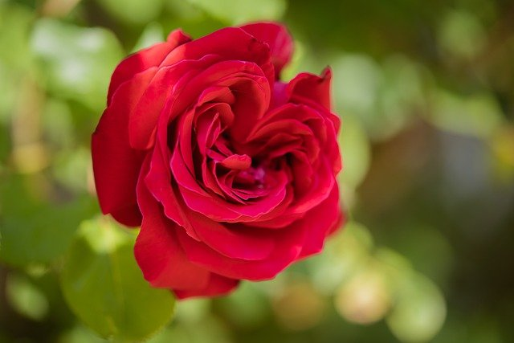
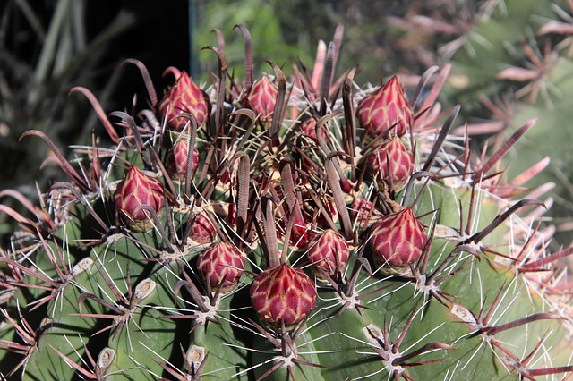

Gorthleck Gardens creates atmospheric outdoor spaces that feel textured, calm, and rooted in place. The emphasis is on strong planting, structure, and an eye for gardens that feel lived in rather than over-finished. This paragraph is a placeholder: swap it for your own voice, your background, and what kind of work you want to be known for.
You can keep this page deliberately minimal: one good paragraph, two or three images, and enough detail to build trust. It should feel personal without becoming wordy.

